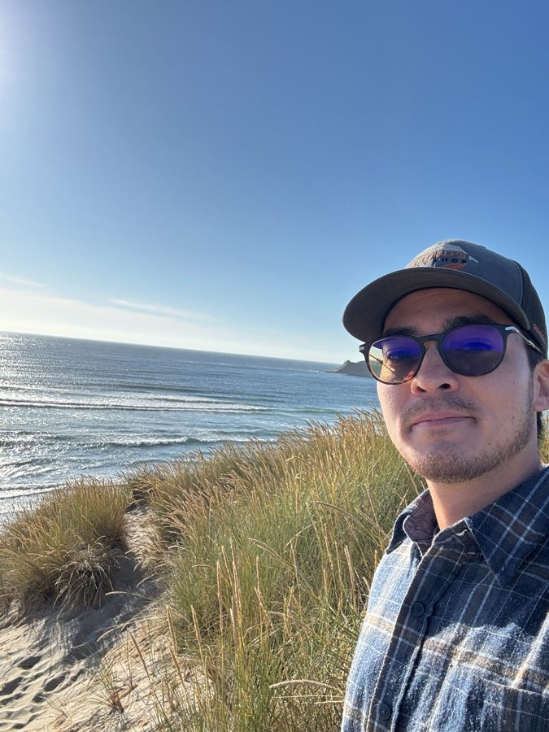
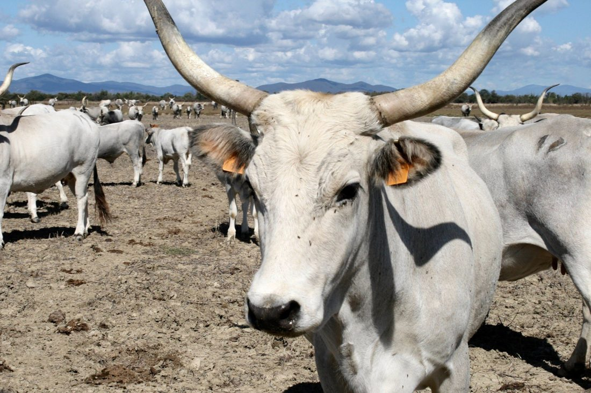
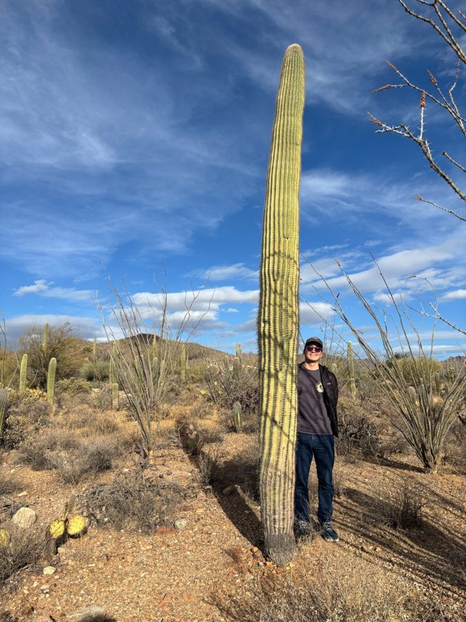
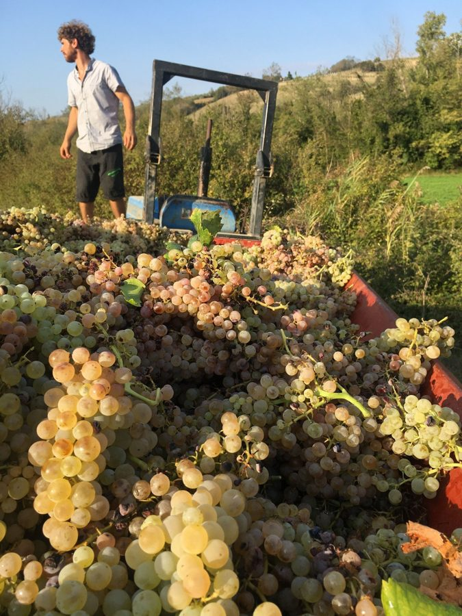

Public-interest stewardship
Connecting natural resource work to community benefit, practical implementation, and long-term care.
About
My path has moved across natural resources, conservation, GIS, Tribal stewardship, field research, working lands, and public-interest project management.
I do not see forestry, agriculture, water, transportation landscapes, public lands, private lands, and Tribal homelands as separate lanes. I see them as connected parts of the same stewardship system.
Conservation work depends on people: agency staff, Tribal governments, landowners, producers, researchers, planners, funders, and communities working through complex decisions together.
My work is aligned with conservation that moves across jurisdictions, landscapes, and communities, especially through public service, Tribal consultation and engagement, GIS and decision support, interagency coordination, public communication, grants, planning, and implementation.

Connecting natural resource work to community benefit, practical implementation, and long-term care.
My undergraduate background in agricultural and applied economics, including HECUA Sustainable Agriculture in Italy, helps me understand stewardship through working landscapes, markets, public programs, and producer decision-making.
Forestry, GIS, remote sensing, field research, and conservation finance have given me practical tools for understanding landscapes and supporting implementation.
I enjoy translating complex topics for different audiences, including agency staff, Tribal partners, community members, technical teams, and funders.
Connected landscapes
My work is shaped by forests, watersheds, working lands, coastal places, dryland ecosystems, and the communities connected to them.




